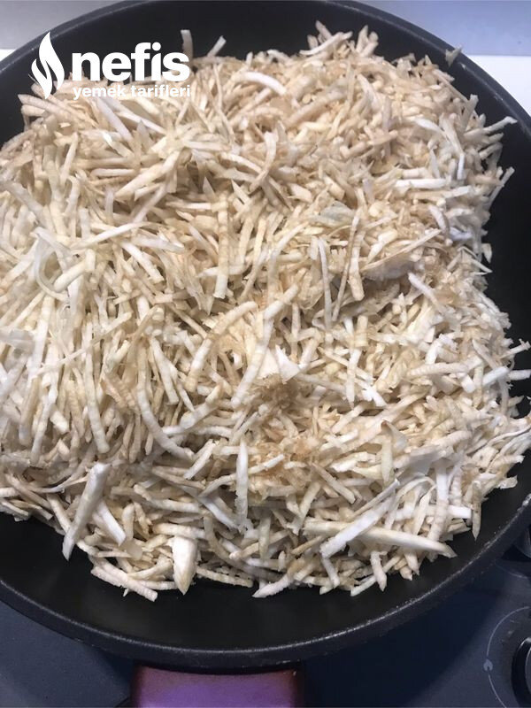

🍽️ 6-8 kişilik⏱️ Hazırlık: 10 dk🔥 Pişirme: 20 dk🏷️ Salata & Meze & Kanepe
Malzemeler
- 2 adet kereviz
- 1 su bardağı ceviz
- 3-4 diş sarımsak
- 2-3 yemek kaşığı tahin
- 750 gram yoğurt
- Doğranmış kereviz yaprağı
- Maydonoz
- Yarım su bardağına yakın zeytinyağı
- Tuz
- Karabiber
Hazırlanışı
- Tavaya kırdığımız cevizleri alarak kendi yağı ile kısık ateşte kavuruyoruz.
- Kerevizlerin kabuklarını soyup rendeliyoruz.
- Zeytinyağını tava veya tencereye koyup ocağı açıyoruz.
- Rendelenmiş kerevizleri rengi dönene kadar arada karıştırarak kavuruyoruz.
- Sarımsakları da kerevizlerin içine atarak birlikte kavuruyoruz.
- Kavrulan kerevizlere bir çay kaşığı kadar tuz ekliyoruz.
- Bu arada yoğurtlu sosumuzu ayarlıyoruz.
- Yoğurdun içine, tuz, karabiber, tahin, ve kerevizlerin içinde kavurduğumuz sarımsağı ezerek ilave ediyoruz.
- Kavurduğumuz cevizleri de ilave ediyoruz.
- Maydanoz, ve kereviz yapraklarını da yoğurda karıştırabiliriz veya üzerini süslemede kullanabiliriz.
- Ilıyan kereviz ile yoğurtlu sosumuzu iyice harmanlıyoruz.
- Servis tabağına alıyoruz.
- Üzerine istenirse zeytinyağı gezdiriyoruz.